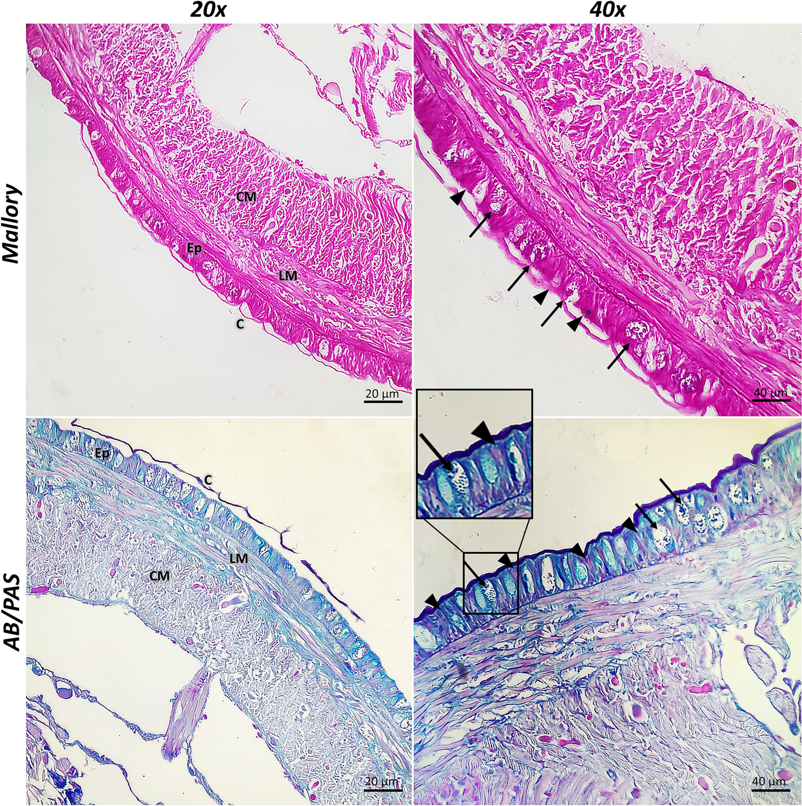
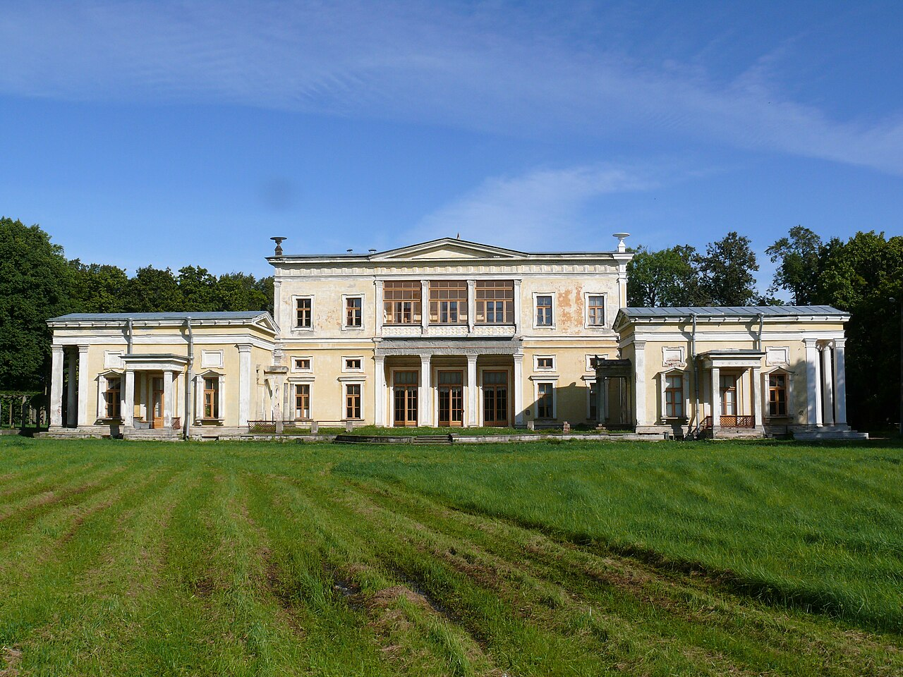
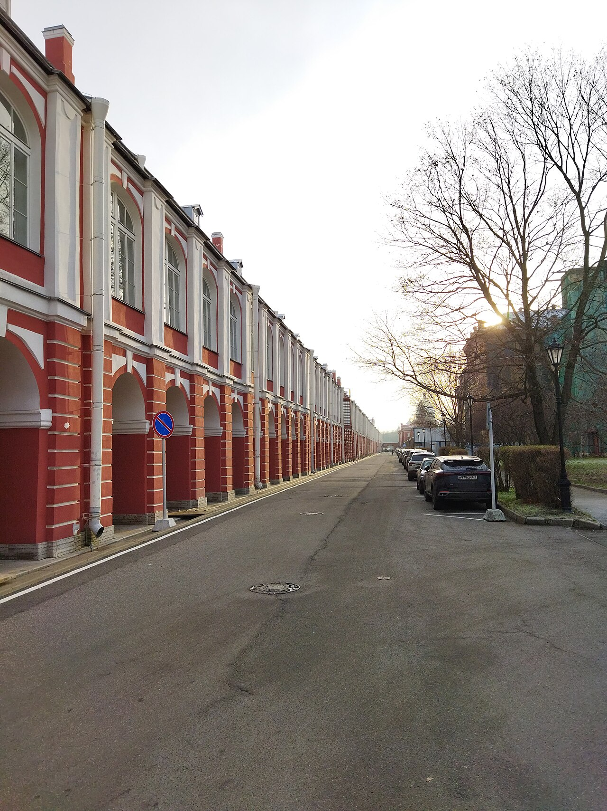
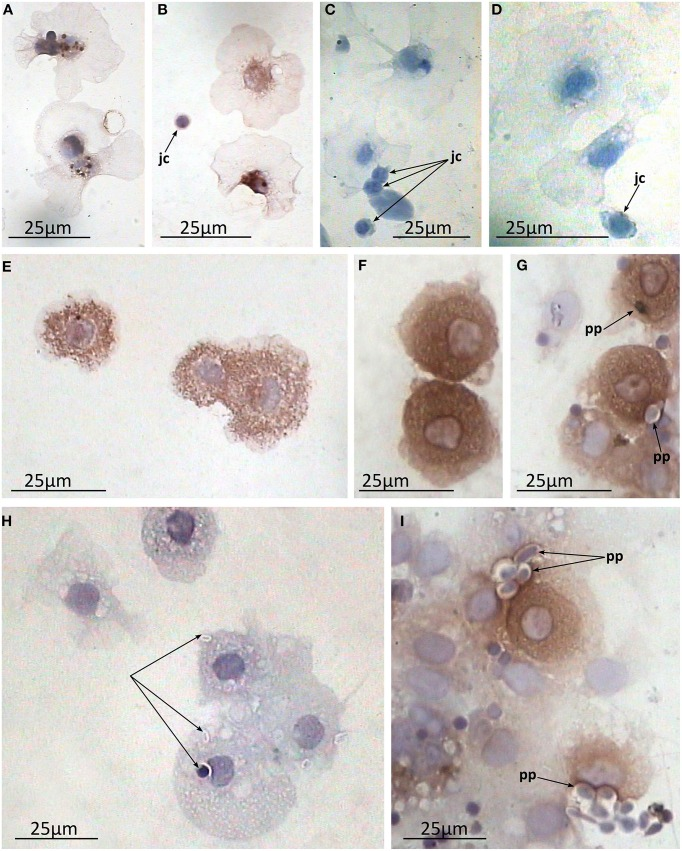
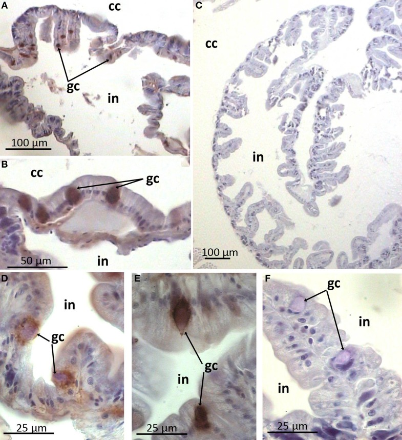
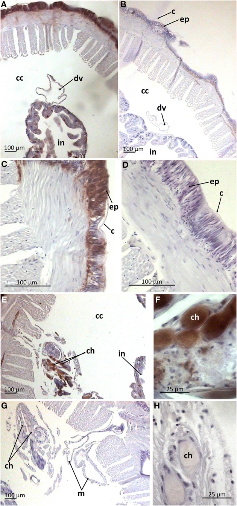
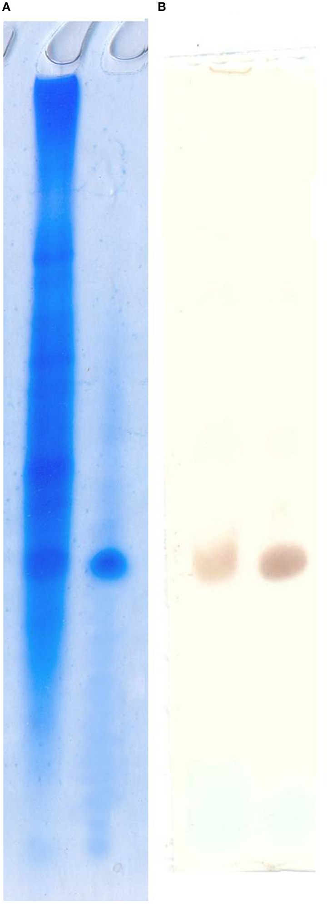
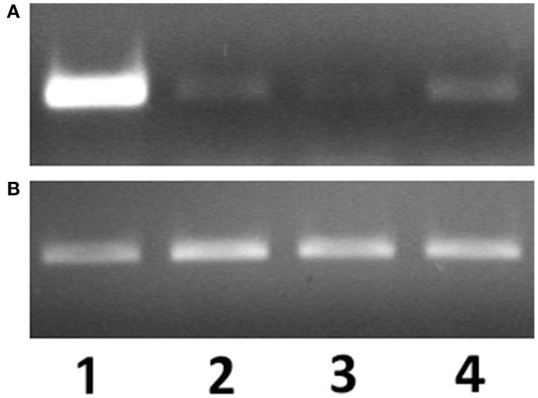
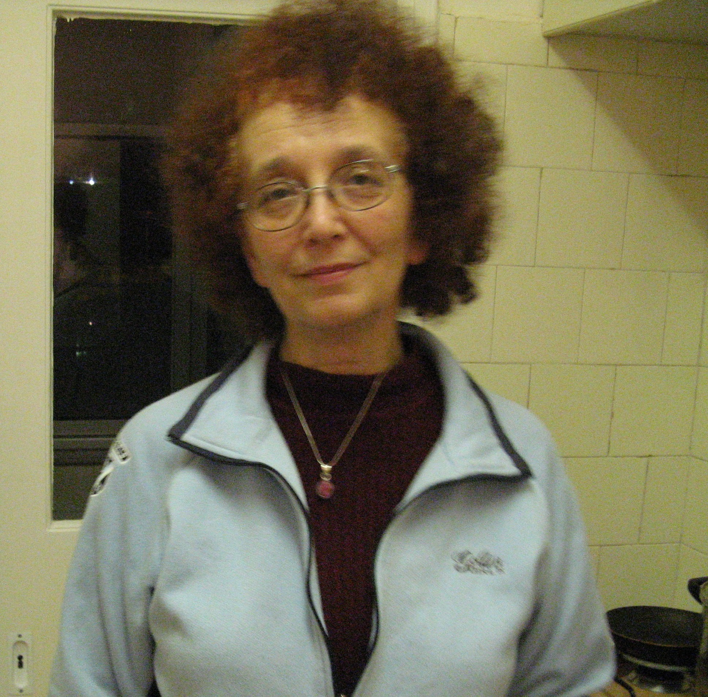
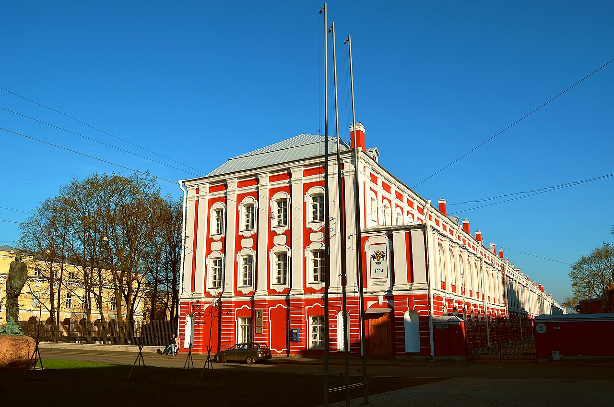

Незакрытый вопрос клеточной биологии
Внутриклеточное
пищеварение у
Arenicola marina
Пять статей. Одна диссертация. 43 года без повторной проверки.


Проф. А.А. Заварзин (мл.)
Зав. кафедрой цитологии и гистологии ЛГУ, 1968–1993
Работы Е.А. Кагановской
Кафедра цитологии и гистологии, Биологический факультет ЛГУ
Arenicola marina
Пескожил. Ключевой биотурбатор приливной зоны Палеарктики.
Заглатывает осадок, извлекает тонкую фракцию органики через специализированный кишечный эпителий
Свободные клетки целомической полости, проникающие в эпителий и фагоцитирующие пищевые частицы
Какая доля переваривания происходит внеклеточно в просвете, а какая внутриклеточно в фаголизосомах?
Модель: гипотеза Кагановской, 1983
Через кишечник проходит огромная масса минерального субстрата с тонким пищевым компонентом — бактерии, диатомеи, органический детрит.
От морфологии к химии просвета
1987 — 1997
Кишечник = plug-flow reactor. Эффективность зависит от времени транзита.
Внеклеточный протеолиз прямо в химусе, до контакта с эпителием.
Органика десорбируется в раствор, абсорбция без фагоцитоза.
Если пищеварение идёт в просвете — зачем нужен внутриклеточный этап?
От пищеварения к иммунитету
2004 — 2023
Овчинникова: Arenicin-1, -2 в целомоцитах. Мощные антимикробные пептиды. Maltseva (2014): иммунолокализация.
Stanovova: 18 TLR, 6 TEP, MASP-like протеаза, complement-каскад. Полный иммунный арсенал.
Целомоциты — иммунные клетки, не пищеварительные. Кто тогда переваривает внутриклеточно?
Смена парадигмы
Целомоциты: от модели внутриклеточного пищеварения к врождённому иммунитету
Пищеварительная функция
Амёбоциты фагоцитируют пищевые частицы из эпителия и переваривают их в фаголизосомах. Основная гипотеза — трофическая роль.
Иммунная функция
Те же клетки экспрессируют антимикробные пептиды (Arenicin-1, -2), 18 TLR-рецепторов, TEP, MASP-like протеазу. Фагоцитоз — часть врождённого иммунитета.



Состояние вопроса
По целомоцитам поле ушло вперёд. По энтероцитам — пробел с 1989 года.


Доказано
- Arenicin-1 / Arenicin-2 (AMPs) в целомоцитах
- 18 TLR, 6 TEP, MASP-like протеаза
- Фаголизосомная активность целомоцитов
- Транскриптомный портрет (scRNA-seq)
- Просветный гидролиз: 5 протеаз, DOM, сурфактанты
Не доказано
- Внутриклеточное пищеварение в энтероцитах
- Маркеры endosome-lysosome пути
- Профиль катепсинов кишечной стенки
- Single-cell транскриптомика кишечника
- Количественный вклад клетки в пищеварение
Методы 2026
- Spatial transcriptomics — карта клеток кишечной стенки
- Confocal co-localization — uptake + эндосомы + лизосомы
- Lysosomal proteomics — панель ферментов
- Tracer uptake assay — путь частицы от просвета в клетку
- Cryo-ET — ультраструктура без артефактов

Элла Абрамовна Кагановская
к.б.н., кафедра цитологии и гистологии
Ленинградский государственный университет
Вопрос открыт.
Инструменты готовы.
Нужен исследователь.
Мама, спасибо, что показала мне, как красив мир под микроскопом.
С любовью, твой сын.
